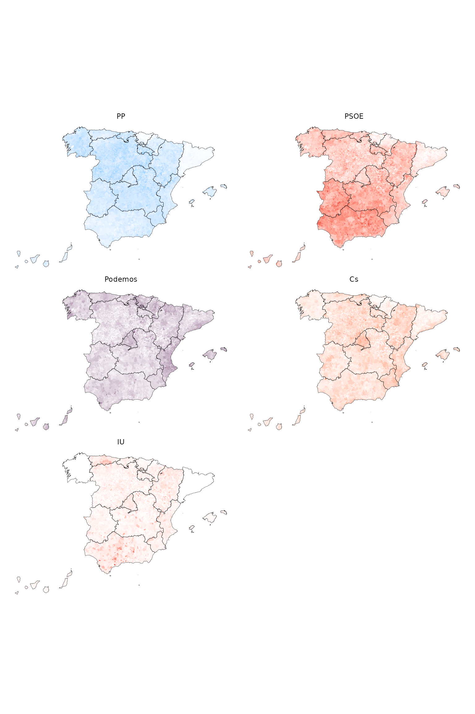

municipios.RmdInstall infoelectoral and load the packages needed.
Download some results. In this case we download the election for Congress of December 2015.
results <- municipios("congreso", "2015", "12") # Descargo los datosImport the geometry shapes for the municipalities using mapSpain.
library(mapSpain)
shp <- esp_get_munic(year = "2016") %>% select(LAU_CODE)
shp_ccaa <- mapSpain::esp_get_ccaa()Since most parties have different names throughout the country, you
will need to recode them to group their results. You can use the column
codigo_partido_nacional included in the resulting
data.frame that indicates the grouping party code at the
national level. After that you’ll have to create the complete
municipality code (LAU_CODE) for the merge with the
sf object and transform the data from long to wide
format.
First, let’s group the parties by
codigo_partido_nacional and siglas and sum the
votes to see which party codes correspond to the main parties.
results %>%
group_by(codigo_partido_nacional) %>%
summarise(
siglas_r = paste(unique(siglas)[1], collapse = ", "),
votos = sum(votos)
) %>%
arrange(-votos)## # A tibble: 56 × 3
## codigo_partido_nacional siglas_r votos
## <chr> <chr> <dbl>
## 1 903316 PP 7216024
## 2 903484 PSOE 5530428
## 3 901079 C´s 3500063
## 4 903736 PODEMOS 3182256
## 5 905033 EN COMÚ 927053
## 6 904850 IULV-CA,UPe 923377
## 7 905008 PODEMOS-COM 671077
## 8 905063 ERC-CATSÍ 599375
## 9 904991 DL 565742
## 10 905041 PODEMOS-En 408417
## # ℹ 46 more rowsThen, we’ll have to recode the party names and calculate the percentage of votes.
results <-
results %>%
mutate(
siglas_r = case_when(
codigo_partido_nacional == "903316" ~ "PP",
codigo_partido_nacional == "903484" ~ "PSOE",
codigo_partido_nacional == "901079" ~ "Cs",
codigo_partido_nacional %in% c("903736", "905033", "905008", "905041") ~ "Podemos",
codigo_partido_nacional == "904850" ~ "IU"
),
# Construyo la columna que identifica al municipio (LAU_CODE)
LAU_CODE = paste0(codigo_provincia, codigo_municipio),
# Calculo el % sobre censo
pct = round((votos / censo_ine) * 100, 2)
) %>%
filter(!is.na(siglas_r)) %>%
# Selecciono las columnas necesarias
select(codigo_ccaa, LAU_CODE, siglas_r, censo_ine, votos_candidaturas, pct)With the LAU_CODE column merge the data with the
geometries of the municipalities.
shp <- left_join(shp, results, by = "LAU_CODE")At last, we may use ggplot2 to visualize the data.
In this case we use purrr::map to create a list of plots
each of them with their own color gradient scale and
patchwork to show them together.
library(ggplot2)
library(purrr)
library(patchwork)
colores <- c("#0cb2ff", "#E01021", "#612d62", "#E85B2D", "#E01021")
names(colores) <- c("PP", "PSOE", "Podemos", "Cs", "IU")
# Creo una lista de plots
maps <-
map(names(colores), function(p) {
shp %>%
filter(siglas_r == p) %>%
ggplot() +
geom_sf(
aes(fill = pct, color = pct),
linewidth = 0, show.legend = F
) +
geom_sf(
data = shp_ccaa, fill = NA, color = "black",
linewidth = 0.1
) +
facet_wrap(~siglas_r) +
scale_fill_gradient(
low = "white", high = colores[p],
na.value = "grey90", aesthetics = c("fill", "color")
) +
theme_void()
})
# Uso patchworks para mostrar los plots
wrap_plots(maps, ncol = 2)